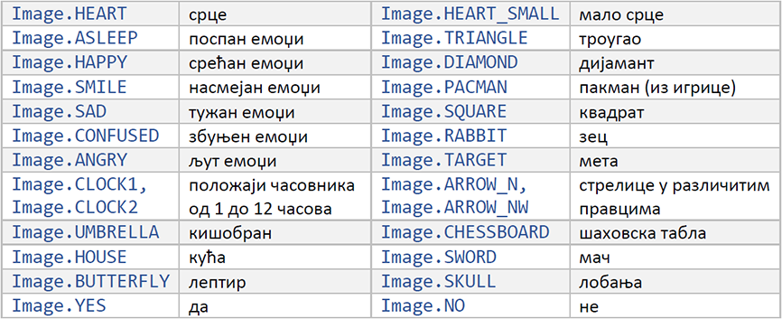

Основне функције¶
Већ сте се упознали са начином програмирања у програмском језику Пајтон, правилима писања наредби и основним особинама језика. Новост у односу на претходне Пајтон програме је примена функција за управљање микробитом, које су дефинисане у за то предвиђеној библиотеци.
Функције које су нам потребне дефинисане су у библиотеци microbit и кроз наредне примере научићемо како да их учитамо и применимо у нашем програму, а потом и како да програм учитамо у микробит и проверимо резултате нашег рада.
Укључивање библиотеке¶
Библиотеку microbit укључујемо у наше програме помоћу наредбе import. Ми ћемо користити наредбу import у следећем облику:
Ова наредба омогућава нам употребу свих функција библиотеке microbit и њоме ће започињати сваки наш будући програм.
Управљање екраном¶
Неке од основних функција помоћу којих можемо да управљамо екраном су:
display.scroll(poruka)
display.show(slika)
display.show(lista_slika)
display.clear()
display.read_light_level()
display.on()
display.off()
Поменули смо да се екран микробита састоји из 25 светлећих диода које су распоређене у пет врста и пет колона. Користимо га да испишемо различите поруке (текст), прикажемо сличице (иконе) или вредности које очитавамо са различитих уграђених или додатних сензора. Основна функција за приказ текста је display.scroll и може се употребити овако:
Потребно је да текст који желимо да буде приказан наведемо у загради као параметар ове функције. Подсетимо се, текст се у Пајтону пише било под знацима навода или под апострофима. Текст ће бити исписан једанпут, тако што „пролази кроз екран” здесна налево.
За приказивање слика (икона) користи се функција display.show, која је такође део микробит библиотеке. Њена употреба изгледа овако:
У овом случају на екрану микробита требало би да се појави срце:

Постоји велики број већ дефинисаних икона, а неке од њих су:
Ако желите сами да нацртате слику коју желите да прикажете, то можете да урадите на следећи начин:
Нацртали смо brod. Свакa од вредности 0-9 одређује колико ће бити осветљена одговарајућа диода на екрану (0 – искључена диода, 9 – максималан осветљај). Осветљај појединих диода се задаје ред по ред одозго на доле, а у сваком реду слева на десно. Тако на пример прва група од 5 цифара задаје осветљаје диода у горњем реду екрана.
Напомена: Можда ће вам у почетку бити прегледније да вредности пишете једну испод друге, на пример:
За брисање тренутног садржаја екрана користимо функцију
Учење већине програмских језика у разним приручницима започиње класичним исписивањем поруке „Zdravo svima!“ (Hello world!). Такав програм на Пајтону за микробит је врло једноставан - довољно је написати само две линије:
Ово је наш први комплетан програм и спреман је за извршавање на микробиту. Проверићемо да ли наш програм функционише.
Када унесете програм у Мu едитор, проверите да ли сте направили неку грешку (Check). Након исправљања евентуалних грешака, сачувајте ваш рад (Save) и учитајте у микробит (Flash). Током учитавања програма у микробит неколико секунди трепериће жута диода на његовој полеђини.
Пример 1:

Напишите програм који омогућава да се на микробиту исписује порука „Здраво“ и приказује срце. Ова радња треба да се понавља све док је микробит укључен.
Решење:
Погледајмо детаљније овај једноставан програм и потврдимо да разумемо сваки његов део.
Први ред програма укључује бибилиотеку са функцијама за рад са микробитом.
У петљи која почиње у трећем реду, услов у while наредби је увек испуњен. Тиме се постиже да се извршавање наредби које следе понавља све док је микробит укључен (или док се у њега не учита неки други програм). На микробиту ће бити приказана порука „Zdravo!“, а затим ће две секунде бити приказано срце. Ове радње ће се понављати неограничени број пута.
На крају сваког проласка кроз петљу правимо паузу у трајању две секундe. То смо урадили тако што смо употребили функцију sleep, чији је општи облик
Пример 2:
Напишите програм који одбројава од пет до нула и затим приказује дијамант
Решење:
Променљива broj узимаће вредности од пет до нула тако што ће се сваки пут умањити за један (трећи број у загради)
Који би бројеви били приказани када би уместо ових вредности у загради стајало (0, 10, 2)?
Шта би се десило када бисмо уместо функције display.show употребили display.scroll? Коју од ове две функције бисте радије употребили када су двоцифрени бројеви у питању? Испробајте!
Овог пута у програму смо употребили функцију
Она омогућава да неку бројну вредност (на пример податак очитан са неког сензора) претворимо у текст како бисмо могли да га прикажемо на екрану. Ако покушате да прикажете број без претходног претварања у текст, приметићете да је и то могуће. Међутим, у другим програмским језицима претварање у текст може бити неопходно, тако да ћемо, ради стицања навике, то радити и у наредним програмима.
Пример 3:
Напишите програм који исцртава на екрану положаје казаљке часовника (нека се казаљка помера сваке секунде).

Решење:
У овом примеру користили смо већ постојећу листу слика Image.ALL_CLOCKS, а када функцији display.show проследимо листу слика, она приказује редом сваку слику из листе. Пошто је тражено да пауза између приказа појединих слика буде једна секунда, и њу смо дефинисали у оквиру позива функције. Када позивамо ову функцију, можемо у загради навести и вредности следећих параметара:
wait - на пример wait = Тrue, aко желимо да програм сачека да се заврши анимација пре него што настави да извршава неку другу радњу,
loop - loop = Тrue, aкo желимо да се анимација понавља неограничени број пута,
clear clear = Тrue, ако желимо да избришемо екран после извршене анимације.
Напомена: Ако не наведемо другачије, подразумеване вредности ових параметара су delay = 400, wait = Тrue, loop = False, clear = False
Пример 4:
Напишите програм који приказује брод који плови (анимацију).

Решење:
Ако вам је једноставније, можете вредности осветљаја диода по врстама да испишете једну испод друге (као што смо претходно објаснили).
Измените програм тако да се анимација изврши само једанпут.
Покушајте да направите своју анимацију!
Још једна функција за управљање екраном (али на сасвим другачији начин) је display.read_light_level(). Oва функција омогућава да помоћу диода које чине екран очитамо колики је ниво осветљености у околини микробита (диоде се могу овако употребити када раде у инверзном режиму). Вредност коју добијамо позивањем ове функције може бити између 0 и 255. Нулу добијамо као резулатат функције када је потпуни мрак, а 255 када је јако светло. Применом ове функције можемо да направимо много интересантних апликација. На пример, микробит може да укључи светло када је ноћ, а да га искључи када је дан.
Пример 5:
Напишите програм који на екрану исписује ниво осветљености микробита.
Решење:
Пример 6:
Допуните претходни програм тако да на микробиту блинка икона шаховске табле ако светло има вредност испод 20, а иначе буде приказан празан екран.
Решење:
На почетку овог поглавља навели смо још две функције за управљање екраном. То су display.off() и display.on(). Ове функције служе за укључивање и искључивање целог екрана. Светлеће диоде које чине екран повезане су на неке од мањих пинова микробита. Ако нам је за неки сложенији пројекат неопходно да ослободимо ове пинове, употребићемо функцију display_off. Када нам ти пинови више не буду потребни, екран можемо да укључимо применом функције display.on().
Још један од разлога за позивање ових функција свакако може бити и уштеда енергије.
Тастери¶
На микробиту се на предњој страни налазе два тастера, тастер А и тастер B. Функције за праћење стања тастера су:
button_a.is_pressed()
button_a.was_pressed()
button_a.get_presses()
button_b.is_pressed()
button_b.was_pressed()
button_b.get_presses()
Функција is_pressed() проверава да ли је притиснут тастер. Да би ова функција вратила потврдан одговор (вредност True), потребно је да тастер буде притиснут баш у тренутку извршавања функције. Сасвим је могуће да микробит у тренутку притискања тастера извршава неке друге наредбе програма, а док он заврши са тим другим наредбама корисник престане да притиска тастер. Зато се често у програму користи и функција was_pressed(), која омогућава да се овај проблем превазиђе. Ова функција проверава да ли је тастер био притиснут (од последње провере до сад).
Функција get_presses() омогућава да проверимо колико је пута био притиснут тастер у неком временском интервалу.
Пример 7:
Напишите програм који ће приказати срећан емоџи ако је притиснут тастер А, тужан ако је притиснут тастер B, а срце ако су притиснута оба тастера истовремено.
Решење:
Размислите зашто смо овим редом проверавали услове. Покушајте да пронађете још неко програмско решење!
Напишите програм који ће исписати поруку „pritisnut taster” ако притиснемо било који од тастера. (користити логичко ИЛИ - or)
Пример 8:
Напишите програм који ће избројати и приказати колико је пута био притиснут тастер А током десет секунди.
Решење:
Звук¶
Када на микробит повежемо звучник или слушалице, можемо га користити и за генерисање различитих мелодија и других звукова (као што је на пример звук сирене). Начин повезивања звучника или слушалица је објашњен на следећој страни .
Oсновне функције које омогућавају задавање звукова и мелодија су
music.play(melodija)
music.pitch(frekvencija, trajanje)
music.set_tempo(ticks=ticks_vrednost, bpm=bpm_vrednost)
Све функције у вези са генерисањем звука преко микробита, дефинисане су у модулу music и ако желимо да их користимо у програму, неопходно је да на почетку програма укључимо овај модул.
За тон који желимо да чујемо, потребно је да у облику стринга (ниске) наведемо три ствари: име одговарајуће ноте, број октаве и трајање. На пример, ’C4:8’ означава ноту ’C’ четврте октаве, која траје 8 откуцаја (енгл. ticks).
Напомена: Свеједно је да ли ћете ноте писати великим или малим словом и да ли ћете их стављати између апострофа или знакова навода!
Од овако записаних нота можемо да формирамо листу, коју затим прослеђујемо функцији music.play као параметар.
Пример 9:
Напишите програм који ће омогућити да се са микробита чује мелодија „На крај села…”
Решење:
Неке од секвенци мелодије које се понављају смо издвојили, како не бисмо морали поново да их пишемо, већ их само позовемо више пута у оквиру програма. Приметили сте да смо на неким местима изоставили број октаве и дужину ноте. То је зато што ће, уколико нема промене у односу на претходну ноту, ове вредности остати запамћене. Дакле, довољно је да их наведемо само ако постоји нека измена.
Ноте представљају тонове тачно одређене фреквенције. Ако желимо да преко микробита чујемо и неке друге тонове (који нису ноте), то можемо да урадимо користећи функцију music.pitch(frekvencija, trajanje). Oва функција има два параметра, а то су фреквенција (број титраја у секунди) и трајање тона у милисекундама. Ево једног примера:
Пример 10:
Напишите програм који ће емитовати звук сличан полицијској сирени.
Решење:
Први циклус омогућава да чујемо тонове у распону фреквенција од 880Hz до 1760Hz са кораком 16 (Hz - херц, јединица за фреквенцију), док други циклус понавља то исто, али у обрнутом редоследу. У првом циклусу фреквенција расте а у другом опада, па се добија карактеристичан завијајући звук.
Темпо
Када желимо да неку мелодију чујемо у бржем или споријем темпу, користимо функцију music.set_tempo. У вези са овом функцијом треба разумети појмове ticks (тикс: откуцаји) и beats (битс: ударци). Бит је у музици основна јединица за ритам и често се такође преводи као „откуцај”. Да ова два појма не бисмо помешали, овде ћемо, мада нерадо, користити термине „бит” и „тик” на енглеском. Бит можемо схватити као главни, јачи откуцај, а тик као споредан, слабији откуцај, који се дешава чешће него бит.
Функција music.set_tempo има два параметра, ticks и bpm. Параметром ticks се задаје број тикова од којих се састоји сваки бит, а параметром bpm се задаје број битова у минуту (bpm је скраћено од beats per minute). При позиву функције можемо да изоставимо један или оба од ових параметара и тада се за изостављени параметар (или параметре) користи подразумевана вредност. Подразумевана вредност за ticks је 4, а за bpm је 120. Тако је на пример music.set_tempo() исто што и music.set_tempo(ticks=4, bpm=120), а music.set_tempo(bpm=180) исто што и music.set_tempo(ticks=4, bpm=180).
Трајање једног тика добијамо када 1 минут поделимо производом вредности ова два параметра. Ако не променимо подразумеване вредности, један тик траје \({1 min \over {4 \cdot 120}} = 0.125 s = 125 ms~\). Ово нам је битно јер се трајање ноте задаје у тиковима, па на пример нота од 4 тика траје \(4 \cdot 125 ms = 500 ms\).
Ако желимо да нота од 4 тика траје \(1000 ms~\), можемо пре позива функције music.play да подесимо темпо на 60 битова у минуту позивом music.set_tempo(bpm=60), јер ће тада један тик трајати \({1 min \over {4 \cdot 60}} = 0.250 s = 250 ms~\).
У оквиру модула music постоји и неколико предефинисаних мелодија које можете користити. Неке од њих су:
music.WEDDING (свадбена мелодија)
music.BIRTHDAY (рођенданска мелодија)
music.POWER_UP (укључивање)
music.POWER_DOWN (искључивање)
music.ENTERTAINER („Забављач”, С. Џоплин)
Тако ћете, уместо да пишете ноте за, на пример, „Прелудијум” (Ј. С. Бах):
део ове мелодије моћи ћете да чујете и ако откуцате само
Генерисање насумичних бројева¶
Можда ћете пожелети да направите неку игру или пројекат у којем ће вам бити потребна нека насумична (случајно изабрана вредност). Насумичну вредност у програму можемо добити ако употребимо неку од наведених функција:
random.randint(a, b)
random.random()
random.randrange(stop)
random.choice(seq)
random.getrandbits(n)
Ове функције су дефинисане у модулу random стандардне Python библиотеке (могу се користити и у обичним Python програмима), па је потребно да на почетку програма учитамо садржај овог модула.
Које вредности добијамо помоћу ових функција?
random.randint(a, b) - насумичан број између а и b, укључујући и граничне бројеве
random.random() - насумичан реалан број између 0 и 1
random.randrange(n) - насумичан цео број од 0 до n-1
random.choice(sekv) - бира случајну вредност из неке секвенце (на пример листе)
Пример 11:
Напишите програм који ће симулирати коцкицу за „Не љути се човече” на следећи начин:
Док се не притисне тастер А насумично се на екрану смењују вредности од један до шест. Када притиснемо тастер А, цифра која је у том тренутку приказана треба да остане на екрану пет секунди.
Решење:
Покушајте да измените програм тако да уместо цифара на екрану буду приказане слике са тачкицама распоређеним као на правој коцкици.

Bluetooth¶
Микробит има хардвер који омогућава уређају да ради као Bluetooth (BLE) уређај, али његова меморија није довољна да подржи програм написан у Микропајтону за његово управљање.
Иако није могуће написати у Микропајтону програм који ће омогућити да микробит комуницира са другим уређајима (рачунаром, паметним телефоном и сл.), могуће је оформити веома ефикасну бежичну мрежу великог броја микробит уређаја. У образовном контексту, ова комуникација је много једноставнија и интересантнија.
Радио¶
Једна од најинтересантнијих могућности микробита јесте међусобна бежична комуникација са другим микробит уређајима. Основне функције које ћемо, за сада, користити за ову сврху су
radio.on()
radio.off()
radio.send(poruka)
radio.receive()
radio.config(različiti parametri)
radio.reset()
Микробит троши више енергије када је слање и примање радио сигнала омогућено. Због тога нам је остављена могућност да радио везу укључимо Функцијом radio.on() када намеравамо да је користимо, а да је искључимо функцијом radio.off() када нам није потребна.
Када је радио веза укључена (након позива Функције radio.on()), поруке можемо да шаљемо са микробита помоћу функције radio.send(poruka), где је poruka неки текстуални податак (стринг). Други микробит или микробитови могу да приме текстуалну поруку позивом функције radio.receive().
Често је комуникација између микробитова организована врло једноставно. На пример један микробит шаље поруку а други је прима, након чега они могу да замене улоге. У многим применама је ово сасвим довољно. У нешто сложенијим сценаријима може, на пример, бити потребно да више микробитова шаље поруке, а један микробит (са посебним задужењем) да их прима и обавља одговарајуће радње по пријему сваке од њих. У том случају послату поруку може да прими сваки микробит, али је само један од њих програмиран да то и ради. Могућа је и обрнута организација, у којој само један микробит шаље поруке а сви остали их примају и спроводе одговарајуће акције. Редак је случај да је потребна комуникација која је сложенија од поменутих - нама није био потребан сложенији облик комуникације у пројектима предложеним у наставку, иако су они прилично разноврсни и (надамо се) интересантни.
Када у једној учионици две групе ученика раде на истом пројекту који користи радио везу, може да се деси да уређаји из једне групе ненамерно примају поруке од уређаја из друге групе и да то омета жељени начин функционисања и збуњује учеснике у пројекту. Тада је потребно да раздвојимо микробитове у групе, тако да свака група комуницира за себе и да се групе не мешају једна другој у разговор. То можемо да остваримо помоћу функције radio.config(). Ова функција служи да подесимо параметре комуникације. Један од параметара комуникације је channel (канал). Канали за комуникацију могу имати вредност од 0 до 83 и параметар channel може да се постави на било коју од њих. На почетку, док не променимо вредност канала, сви микробитови комуницирају преко канала 7. Да бисмо избегли мешање једне групе другој у разговор, довољно је да све микробитове једне групе подесимо да користе један канал, на пример radio.config(channel = 3), а све из друге групе поставмо на неки други канал, на пример radio.config(channel = 4), или их оставимо на каналу 7, ако нема треће групе којој би то сметало.
Функцијом radio.config() могу се подесити и други параметри комуникације, као што су, на пример, максимална дозвољена дужина поруке, максималан број порука које могу да чекају да буду прочитане (ако се за врло кратко време пошаље превише порука, неке ће бити изгубљене), јачина радио сигнала (јачи сигнал значи већи домет али и брже трошење батерије) итд. али ми остале параметре нећемо користити. Функција radio.reset() служи да све ове параметре вратимо на почетне, односно подразумеване вредности.
Пример 12:
Напишите програм који омогућава комуникацију између два микробита. Ако са једног микробита пошаљемо неки број, на другом микробиту треба да се појави пет пута већа вредност.
Програм за први микробит радиће следеће: притиском на тастер А повећаће вредност броја за један, притиском на тастер Б умањиће вредност броја за један, а ако притиснемо оба тастера истовремено проследиће другом микробиту тренутну вредност броја:
Други микробит ће примити ту вредност, увећати је пет пута и приказати на екрану:
Покрет¶
Помоћу функције accelerometer.current_gesture() можемо да одредимо на који начин се тренутно помера микробит и како је он тренутно окренут. Ова функција враћа стринг, а могуће вредности и значења њеног резултата су:
’up’ - уређај се подиже;
’down’ - уређај се спушта;
’left’ - уређај се помера на лево;
’right’ - уређај се помера на десно;
’face up’ - уређај је окренут екраном (лицем) навише;
’face down’ - уређај је окренут екраном (лицем) наниже;
’freefall’ - уређај слободно пада;
’shake’ - уређај се тресе;
’3g’ - уређај нагло убрзава или успорава. Ово обично значи да је уређај заустављен неком препреком, то јест да је ударио у нешто;
’6g’ - као и претходно, само се ради о већем убрзању (успорењу), то јест јачем ударцу;
’8g’ - још јаче убрзање (успорење), односно ударац;
Слово g у ознакама 3g, 6g, 8g означава Земљино убрзање, а број испред слова говори колико пута је измерено убрзање (успорење) веће од Земљиног. Није неопходно да тестирате да ли функција accelerometer.current_gesture() заиста може да врати све ове вредности, мада је микробит изузетно издржљив ☺.
Осим ових специфичних начина кретања микробита, могуће је регистровати и покрете у одређеном правцу. За то се користе следеће функције, које дају вредности убрзања дуж координатних оса у хиљадитим деловима земљиног убрзања (мили-ге):
accelerometer.get_x()
accelerometer.get_y()
accelerometer.get_z()
Ове функције враћају целобројне вредности у опсегу од -2000 до 2000 (од -2 g до 2 g). Ако је, на пример, вредност функције accelerometer.get_z() негативна, то значи или да уређај убрзава у негативном смеру дуж z осе, или да успорава у позитивном смеру дуж z осе. Ове две врсте кретања се не могу разликовати сензорима - када сте у лифту који убрзава на доле, осећате се исто (лакше) као када лифт успорава на горе. Такође, убрзавање у позитивном смеру дуж z осе се не разликује од успорења у негативном смеру дуж z осе (оба дају позитивне вредности функције accelerometer.get_z()). Због тога се убрзање и успорење изражавају у истим јединицама за убрзање (овде Земљиним убрзањима). Као што је речено, велика апсолутна вредност убрзања се много лакше постиже наглим смањењима апсолутне вредности брзине, то јест успорењима (ударцима), него повећавањем брзине. Наравно, све речено за функцију accelerometer.get_z() важи и за позиве остале две фукције и убрзања дуж оса x и y.
Позив функције accelerometer.get_values() може да замени позиве претходне три функције заједно, јер ова функција враћа уређену тројку бројева, који представљају вредности убрзања дуж све три осе редом.
За пријем података са овог сензора дефинисано је још много функција.
Пример 13:
Напишите програм за игру „Папир, камен, маказе”. Када се протресе микробит, на његовом екрану треба насумично да се појави једна од ове три слике.
„Папир, камен, маказе” се игра у пару. Играчи истовремено протресу микробитове и зависно од слика које су добили добијају бодове по следећем правилу:
исте слике - нерешен резултат
маказе и папир - играч са маказама добија један бод
маказе и камен - играч са каменом добија један бод
камен и папир - играч са папиром добија један бод

Написаћемо програм који генерише насумичне слике. Ви га, наравно, можете унапредити додавањем и приказивањем броја бодова за сваког од играча (на пример, притискањем на неки од тастера).
Решење:
Пример 14:
Напишите програм који ће приказати ’-’ ако је микробит хоризонтално положен, слово D ако га нагнемо у десну страну, а слово L ако га нагнемо у леву страну.

Решење:
Користићемо функцију accelerometer.get_x(). Када је вредност функције близу нуле, сматрамо да уређај мирује у хоризонталном положају. Испробавањем одређујемо граничну вредност (у нашем решењу 40), изнад које вредности ове функције желимо да прогласимо за нагињање, док вредности мање од граничне игноришемо.
Компас¶
Микробит је опремљен магнетометром који отвара широк спектар могућности за израду различитих пројеката. Функције које су дефинисане за употребу овог сензора су следеће:
compass.calibrate()
compass.is_calibrated()
compass.clear_calibration()
compass.heading()
compass.get_x()
compass.get_y()
compass.get_z()
compass.get_field_strength()
Да бисте користили микробит као компас неопходно је да га прво калибришете. Прве три наведене функције су у вези баш са тим поступком. Прва покреће калибрацију, друга проверава да ли је уређај калибрисан, а трећа брише претходну калибрацију.
Када покренете поступак калибрације, микробит не извршава никакве друге операције док се калибрација не заврши. Да би уређај био калибрисан, потребно је да га окрећете и нагињете у различитим правцима, све док не засветле све диоде на екрану, након чега се на екрану појављује насмејан емоџи. То значи да је микробит калибрисан и спреман за даљу употребу, и да сада (поред свих других функционалности) могу да се користе и остале функције модула compass.
Функција compass.heading() враћа цео број од 0 до 360 који представља азимут, односно угао у степенима који микробит тренутно заклапа са правцем севера. Да би резултат био исправан, потребно је да током извршавања функције compass.heading() микробит буде у хоризонталном положају.

На основу тог угла можемо да одредимо у ком правцу је север, односно да одредимо ка којој страни света смо окренути (оријентишемо се). На пример, ако је азимут 90, то значи да је микробит окренут ка истоку, ако је 180 - микробит је окренут ка југу итд.
Следеће три функције (compass.get_x(), compass.get_y(), compass.get_z()) као резултат враћају целе бројеве, који представљају дејство магнетног поља у околини уређаја, изражено у nT (nano tesla). Ови бројеви могу бити позитивни или негативни, у зависности од смера у којем делује поље дуж правца одређене осе.
Функција compass.get_field_strength() враћа цео број, који представља укупно дејство магнетног поља у околини уређаја изражено у nT.
Пример 15:
Напишите програм који ће омогућити да микробит користите као компас. На екрану треба да буде приказано одговарајуће слово у зависности од тога ка којој је страни микробит окренут (N-север, Е-исток, W-запад, а S-југ).

Решење:
Управљање пиновима¶
Неке од најчешће коришћених (нама потребних) функција које омогућавају управљање пиновима на микробиту, а преко њих и различитим уређајима, су следеће:
read_digital()
read_analog()
write_digital(vrednost)
write_analog(vrednost)
set_analog_period(period)
is_touched()
Ове функције служе за очитавање вредности са пинова (read) и за уписивање вредности на пинове (write). Са пинова можемо очитавати и на њих уписивати дигиталне и аналогне вредности величина. У чему је разлика?
Узмимо као пример прекидач за светло. Прекидач може имати само два стања - укључено или искључено, има напона или нема напона, један или нула. Дигиталне величине су попут прекидача. И оне имају само два стања: 0 или 1. Вредности које очитавамо са пина, то јест добијамо као резултат функције read_digital() су увек 0 или 1. Исто тако, вредности које уписујемо помоћу функције write_digital(vrednost) морају бити 0 или 1. Када кажемо 1, подразумева се вредност максималног напона који даје уређај, а то је у случају микробита 3.3V. Према томе, ако на неки од пинова упишемо дигиталну јединицу write_digital(1), то значи да смо на тај пин довели напон од 3.3V.
Да ли је иста прича и када су температура или ниво осветљености у питању? Наравно да није. Ове величине могу имати много различитих вредности. Називамо их аналогне величине. Применом функција write_analog(vrednost) и read_analog() на микробит можемо да упишемо или са његових пинова очитамо вредности од 0 до 1023. Тестирање можете да извршите тако што ћете да повежете потенциометар на неки од пинова (погледајте на следећој страни шта је потенциометар и како се повезује на микробит), померате његов клизач од почетног до крајњег положаја док на микробиту извршавате програм који исписује вредности очитане са тог пина.
Функцијом set_analog_period одређујемо колико ће милисекунди сигнал бити присутан на одређеном пину при сваком извршавању функције write_analog. Најбоље је да, уколико је потребно, ову вредност подесимо на почетку програма.
На жалост, немају сви пинови микробита могућност за аналогни упис или читање вредности, али основна три велика пина (0, 1, и 2) која ћемо користити je имају и то је довољно за многе примене.
Још једна веома корисна функција за рад са пиновима јесте is_touched(). Ова функција проверава да ли је додирнут неки пин. Под додиром се подразумева да је пин преко неког проводника повезан на GND пин. Тај проводник може да буде и наше тело.
Напомена: Да бисте могли да испробате решења следећих примера у којима се управља пиновима, погледајте на следећој страни како да правилно повежете светлећу диоду са микробитом.
Пример 16:
Напишите програм који ће омогућити да се сваке секунде аутоматски укључује и искључује светлећа диода повезана на пин 2 микробита.
Решење:
Пример 17:
Напишите програм који ће омогућити да се постепено повећава и смањује јачина светла диоде повезане на пин 1 микробита.
Решење:
Пример 18:
Напишите програм који ће нацртати срце ако додирнемо пин 1 или 2 микробита.
Напомена: док додирујемо пин, подразумева да смо (на пример другом руком) повезани на GND пин и да на тај начин повезујемо одговарајући пин са уземљењем/масом.
Решење:
Температура¶
Већ смо рекли да микробит користи сензор који је намењен мерењу температуре његовог процесора. Функција која нам омогућава да очитавамо вредности температуре у околини микробит уређаја је
temperature()
Пример 19:
Напишите програм који ће исписати вредност температуре у просторији када се притисне тастер А на микробиту.
Решење:
Инерактиван рад¶
За остваривање интеракције са микробитом преко рачунара, послужиће нам дугме REPL које се налази у главном менију Мју едитора (REPL је акроним од речи read–eval–print loop). Активирањем овог дугмета у Мју едитору се отвара додатни прозор испод прозора за унос програма.
Овај прозор нам даје могућност да микробит користимо интерактивно. То значи да са рачунара можемо једну по једну да задајемо наредбе, које ће се извршавати на микробиту. На пример, ако откуцамо display.set_pixel(2, 2, 9) и притиснемо Enter, диода у центру екрана ће засветлети најјачим интензитетом.

Из REPL прозора можемо да извршавамо и обичне Пајтон наредбе, као што је на пример print(2+2).

Иако вам због исписивања резултата у REPL прозор можда не изгледа тако, наредба print је такође извршена на микробиту. У ствари, не само да је на микробиту могуће интерактивно извршавање и обичних Пајтон наредби и оних које користе улазе и излазе самог микробита, него је све то могуће и из програма. Другим речима, поред интерактивне употребе REPL прозора могуће је писати и програме који осим свих улаза и излаза на самом микробиту, користе и улаз са тастатуре рачунара и исписују текст у REPL прозор.
За коришћење REPL прозора за текстулани улаз и излаз из програма, поступак је следећи:
напишите програм у Мју едитору
ако је REPL прозор већ отворен, затворите га (кликом на исто REPL дугме у менију)
пребаците програм на микробит користећи дугме Flash
притисните дугме REPL да бисте отворили REPL прозор
ресетујте микробит притискањем reset тастера који се налази на његовој полеђини. Тиме постижемо да микробит „постане свестан” REPL прозора.
Програми који користе REPL прозор за текстулани улаз и излаз, могу значајно да олакшају рад током прављења програма. Ево само неколико примера:
ако програм још увек није потпуно исправан, поруку о грешци је лакше прочитати у REPL прозору него на малом екрану микробита.
ако наш програм још увек не ради онако како смо замислили, можемо у програм да додамо помоћне print наредбе, које ће у REPL прозору исписивати додатне информације. На тај начин лакше можемо да испратимо понашање програма (које наредбе се када извршавају, које су вредности променљивих итд.) и откријемо грешке у програму. Након исправљања програма, ове print наредбе треба уклонити (или ставити у коментар ако мислимо да нам још могу требати).
ако тренутно немамо на располагању никакву додатну опрему, можемо у међувремену за тестирање и сређивање написаног дела програма да користимо улаз са тастатуре, а касније, када микробит повежемо са додатним компонентама на одговарајући начин, само да додамо наредбу за очитавање са одговарајућег пина.
Ове и неке друге могућности програма који преко серијског порта користе текстулани улаз и излаз са рачунара илустроване су у додатку на крају овог приручника.
Приказ података у реалном времену¶
Из претходно реченог, јасно је да REPL прозор можемо да користимо за сталан текстуални приказ и праћење вредности одређених података током рада програма.
Пример 20:
Напишите програм који ће нам омогућити да пратимо покрете микробита у простору (очитава, исписује и графички приказује вредности за x, y и z са акцелерометра у реалном времену).
Напомена: за извршавање оваквих програма је пожељно да се набави дужи кабл, који омогућава слободније покрете микробит уређаја прикљученог на рачунар.
Решење:
Још удобнији начин праћења вредности које нас интересују је њихово графичко приказивање. За то се користи дугме Plotter у менију Мју окружења.

Треба имати на уму да од свих вредности које из програма испишемо помоћу функције print, уграђени плотер аутоматски приказује само оне које су торке. Тако на пример, ако следећи програм извршимо уз отворене прозоре REPL и Plotter, вредности температуре ће бити исписиване текстуално, али неће бити приказиване графички:
Да би темература била приказивана и графички, потребно је њену вредност смeштати у (једночлану) торку и тако исписивати:
Програм који исписује вредности очитане са акцелерометра, такође их је и графички приказивао зато што функција accelerometer.get_values() враћа торку вредности.
Све податке које приказује Plotter док је активан можете и да сачувате (Save). Снимљену датотеку можете пронаћи у фасцикли mu_code на вашем рачунару, у датотеци са екстензијом csv (comma separated values, вредности раздвојене запетом). Ово је уобичајен и често коришћен формат за табеларне податке, па их овако сачуване лако можете даље обрађивати помоћу различитих програма (на пример MS Excel).
Проверите знање¶
Питање 1: Коју функцију користимо ако желимо да обришемо садржај приказан на екрану?
- clear.screen()
- Одговор није тачан, покушајте поново!
- clear.display()
- Одговор није тачан, покушајте поново!
- display.empty()
- Одговор није тачан, покушајте поново!
- display.clear()
- Одговор je тачан, функција display.clear() служи за искључивање свих диода екрана, односно брисање његовог садржаја.
Питање 2: Функцију random.random() користимо када желимо да генеришемо:
- насумичан цео број
- Одговор није тачан, покушајте поново!
- насумичан реалан број између 0 и 1
- Тако је, ова функција генерише насумичну (случајну) вредност између 0 и 1.
- Овакав облик функције не постоји.
- Одговор није тачан, покушајте поново!
- неки број са пет различитих цифара
- Одговор није тачан, покушајте поново!
Питање 3: Ако желимо да креирамо мелодију преко микробита, неопходно је да на почетку програма учитамо:
- све функције предвиђене за рад са микробитом (from microbit import *)
- Одговор није тачан, покушајте поново!
- модул radio из основне Python библиотеке (import radio)
- Одговор није тачан, покушајте поново!
- модул music из основне Python библиотеке (import music)
- Одговор је тачан, функције предвиђене за генерисање звука дeфинисане су у модулу music, у главној Пајтоновој библиотеци.
- ништа од наведеног
- Одговор није тачан, покушајте поново!
Питање 4: Да ли можемо да детектујемо светлост ако прекријемо екран микробита?
- Могуће је, сви сензори се налазе на задњој страни микробита.
- Одговор није тачан, покушајте поново!
- Микробит не може уопште да детектује ниво осветљености.
- Одговор није тачан, покушајте поново!
- Сензор за ниво осветљености се налази у процесору, тако да је могуће.
- Одговор није тачан, покушајте поново!
- Није могуће, зато што се за детектовање светлости користе диоде екрана (у инверзном режиму)
- Тачан одговор, екран микробита не сме да буде покривен ако желимо да проверимо колико је осветљење у околини.
Питање 5: Да ли је могуће да више микробитова међусобно комуницира из две различите просторије (кроз зид)?
- Не, уређаји морају да буду видљиви један другом.
- Одговор није тачан, покушајте поново!
- Да, ово је могуће.
- Одговор је тачан, потребно је да се подеси исти канал за све микробитове у групи и они ће моћи (преко радио таласа) међусобно да размењују поруке.
- Микробит има уграђен WiFi, могу да се повежу на интернет и међусобно комуницирају.
- Одговор није тачан, покушајте поново!
- Два микробита не могу никако бежично да комуницирају.
- Одговор није тачан, покушајте поново!
Питање 6: Ако функција compass.heading() врати вредност 135, то значи да је микробит окренут у правцу:
- североистока.
- Одговор није тачан, покушајте поново!
- истока.
- Одговор није тачан, покушајте поново!
- југоистока.
- Тако је.
- југа.
- Одговор није тачан, покушајте поново!